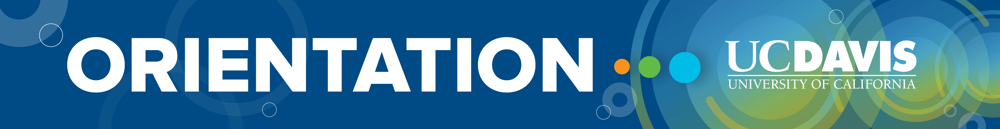
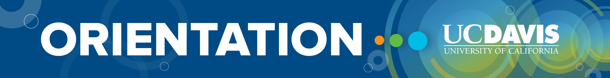

And last, but not least, the final step in the orientation process, Aggie Orientation. During this step, students
will:
• Begin to build support networks with fellow Aggies that include new and current students, faculty, and staff.
• Become familiar with navigating our expansive campus to access relevant people and resources.
• Experience first-hand the academic rigors of UC Davis with the guidance of faculty.
• Be welcomed by college and major advisors essential to their academic success.
• Discover how they can contribute to our diverse community.


 
